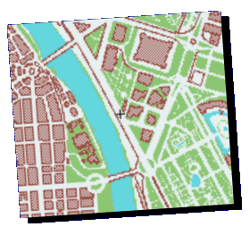

Welcome to the GPS BOY home page. Yet another GB hardware project...
(Last update: 14/10/2004)
|
GPS BOY is a portable GPS (Global Positioning System)
receiver system based on a GPS integrable module
(Trimble's Lassen SK II)
and a Game Boy Color. As I guess you already know, GPS is a system
for obtaining the exact position coordinates (and other data) of a receiver
placed anywhere on Earth. The receiver uses an antenna to track the signals
sent by a group of satellites known as the GPS constellation, and
uses the received data to calculate longitude, latitude, speed, etc.
I know, adding GPS capabilities to a GBC is not a new idea. Actually there is a previous project by TeamKNOx called GB GPS which already did. However, since I developed this for fun, I decided to release it for the sake of the GB development "scene". To run this you will need:
|
|  |
Basically, the GBC and GPS receiver board are connected through a
serial cable. The provided software (ROM image file) must then be loaded into
the GBC using your favourite flash card (Bung, etc.), and both devices
turned on. When the system is operating, the GBC communicates with the
GPS board using a serial protocol called TAIP to configure, obtain
GPS data, etc. Position values, time, status, etc. are shown on the
color LCD screen, as you can see in the sample pictures. It also
includes an experimental map function.
For any comment, suggestion or complain, you can contact the author (Enrique Sanchez) at the e-mail addresses included in the documentation. Greetings to Martin Korth, the best Game Boy emulator programmer around. :-)
|
Latest news: Gerd Bartelt has reported that GPS BOY will also work fine using a different GPS module: the Lassen SQ. This is a more compact module than the Lassen SK II, and it is compatible with it at serial communication level (same protocols, voltage, etc.), so you can use it instead. You won't need to change a single bit of the software, only the physical connection to the GPS module and the power supply (3V instead of 5V) need to be adapted. See how compact it can be with this new Lassen SQ module, including
an embedded type antenna. |
|
GPS BOY is provided for free, including source code. It is intended
for educational purposes, so you shouldn't use it commercially
(at least not without my permission). Also I won't
accept any responsabilities on the possible damage you may cause using
this thing.
If you are seriously interested, I encourage you to download the package and read all the documentation. Though brief, all you need to know about connections, instructions of use, etc. is there. Click below to download the full GPS BOY package, and have fun. (490Kb) |
BONUS: There's also this crappy game I wrote some time ago, for a Bung competition. It's called Friki Race.
FRIKIRC.ZIP(17Kb) |